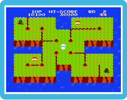

|
|

Cava profundamente por la tierra, apunta tu arpón, o tira rocas para
derrotar al enemigo. Cuando ya no haya enemigos -ya hayan sido derrotados o
si simplemente han huido- el nivel acabará, y avanzarás a la siguiente ronda.
 Fin del juego Fin del juego
Si un Pooka o un Fygar te toca, o si el fuego de un Fygar llega a tocarte, pierdes
una vida. Lo mismo pasa si una roca cae encima de ti. Cuando pierdes una vida, tus
vidas disminuyen por uno. Si pierdes una vida cuando no tienes vidas restantes, el
juego terminará, y regresarás a la pantalla de título.
|
|
|
|